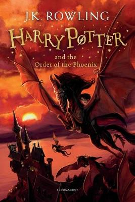

Lord Voldemort has returned in secret and not everyone believes Harry’s account of what happened to him in the final moments of the Triwizard Tournament. For the school is now under the governance of the ruthless, sugar-pink-clad, Dolores Umbridge who is intent on bringing her own brand of order to the school, using increasingly brutal methods. There are those who are fighting back, but this puts those Harry loves most in mortal danger.